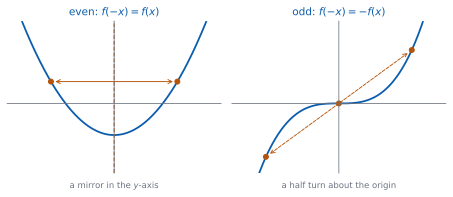
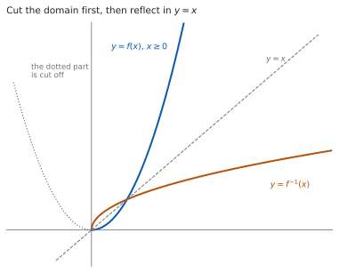

HL 2.14 — Odd and even functions, and inverses on a restricted domain（偶関数・奇関数・逆関数）
- \(f(-x)\) を計算して、偶関数・奇関数・どちらでもないを判定できる。
- 偶関数・奇関数のグラフの対称性を言える。
- 周期関数の意味を知り、\(f(x+T) = f(x)\) を使って値を出せる。
- 逆関数 \(f^{-1}(x)\) を求められる。
- 逆関数をもつように定義域を制限できる。
- \(f^{-1}\) の定義域と値域を、\(f\) のものから言える。
- self-inverse（自分自身が逆関数）であることを示せる。
The idea
1. Even and odd functions（偶関数と奇関数）
シラバスは、定義を式で書いています。
Odd and even functions.
Even: \(f(-x) = f(x)\)
Odd: \(f(-x) = -f(x)\)
判定の手順は、いつも同じです。
- \(f(-x)\) を計算する。
- \(f(x)\) と同じなら even。
- \(-f(x)\) と同じなら odd。
- どちらでもなければ neither。
\(f(x) = x^{2}-4\) で試します。
\[ f(-x) = (-x)^{2} - 4 = x^{2} - 4 = f(x) \]
even です。 次に \(g(x) = x^{3}-x\) です。
\[ g(-x) = -x^{3} + x = -\left(x^{3}-x\right) = -g(x) \]
odd です。 最後に \(h(x) = x^{2}+x\) です。
\[ h(-x) = x^{2} - x \]
これは \(h(x) = x^{2}+x\) とも \(-h(x) = -x^{2}-x\) とも違います。neither です。
even でも odd でもない関数のほうが、ずっと多いです。「even でなければ odd」ではありません。
覚え方としては、\(x\) の指数がすべて偶数なら even、すべて奇数なら odd（定数項は \(x^{0}\) なので偶数の仲間）です。\(x^{2}+x\) のように混ざっていると、どちらでもありません。
2. The symmetry of the graph（グラフの対称性）

図 1 のとおり、定義はグラフの対称性として見えます。
| 種類 | 式 | グラフ |
|---|---|---|
| even | \(f(-x) = f(x)\) | \(y\) 軸について線対称 |
| odd | \(f(-x) = -f(x)\) | 原点について点対称（半回転で重なる） |
odd な関数が \(x = 0\) で定義されていれば、\(f(0) = 0\) です。 \(f(0) = -f(0)\) から \(2f(0) = 0\) となるからです。グラフは原点を通ります。
グラフをかいてから対称性を見るより、\(f(-x)\) を計算するほうが速く、確かです。
\((-x)^{2} = x^{2}\)、\((-x)^{3} = -x^{3}\) と、指数が偶数か奇数かで符号が決まるところだけ気をつけてください。
3. Periodic functions（周期関数）
シラバスは、\(1\) 行だけ足しています。
Includes periodic functions.
ある正の数 \(T\) があって、定義域のどの \(x\) でも
\[ f(x+T) = f(x) \tag{1}\]
が成り立つとき、\(f\) を周期関数、いちばん小さいそのような \(T\) を周期（period） と呼びます。
たとえば「周期が \(4\) で、\(0 \leq x < 4\) では \(f(x) = x\)」という関数なら
\[ f(6) = f(6-4) = f(2) = 2, \qquad f(-1) = f(-1+4) = f(3) = 3 \]
です。\(T\) を足したり引いたりして、\(0 \leq x < 4\) に入れてから計算します。
周期は、いちばん小さいものを答えます。 \(T\) が周期なら \(2T\) でも 式 1 は成り立ちますが、周期と呼ぶのは最小のほうです。
4. Finding the inverse function（逆関数を求める）
シラバスは、次のように書いています。
Finding the inverse function, \(f^{-1}(x)\), including domain restriction.
逆関数は SL で扱いました（SL 2.5）。求め方は \(3\) 手です。
- \(y = f(x)\) と置く。
- \(x\) について解く。
- \(x\) と \(y\) を入れかえる（または、出た式の \(y\) を \(x\) に書きかえる）。
\(f(x) = \dfrac{2x+1}{x-3}\)（\(x \neq 3\)）でやります。
\[ y = \frac{2x+1}{x-3} \ \Rightarrow \ y(x-3) = 2x+1 \]
\(x\) の入っている項を左に集めます。
\[ xy - 3y = 2x + 1 \ \Rightarrow \ xy - 2x = 3y + 1 \ \Rightarrow \ x(y-2) = 3y+1 \]
\[ x = \frac{3y+1}{y-2} \]
\[ f^{-1}(x) = \frac{3x+1}{x-2}, \qquad x \neq 2 \]
\(x\) でくくるところが山です。 \(x\) が \(2\) か所に出てくるので、集めてからくくります。
5. Restricting the domain（定義域を制限する）

\(f(x) = x^{2}\) には、\(\mathbb{R}\) の上では逆関数がありません。\(f(2) = f(-2) = 4\) で、\(4\) から戻るときに \(2\) と \(-2\) のどちらか決まらないからです。
逆関数をもつのは、どの値も \(1\) 回しかとらない関数だけです。\(x^{2}\) は \(1\) つの値を \(2\) 回とっています。
そこで、定義域を半分に切ります。
\[ f(x) = x^{2}, \quad x \geq 0 \qquad \Longrightarrow \qquad f^{-1}(x) = \sqrt{x}, \quad x \geq 0 \]
図 2 のとおり、\(x \geq 0\) の部分だけを \(y = x\) について折り返したものが \(f^{-1}\) です。
\(2\) 次関数なら、平方完成をして頂点を見つけ、そこで切ります（SL 2.7）。\(f(x) = x^{2}-6x+5 = (x-3)^{2}-4\) なら、頂点は \(x = 3\) なので \(x \geq 3\)（または \(x \leq 3\)）に制限します。
\((x-3)^{2}-4 = y\) から \(x = 3 \pm \sqrt{y+4}\) です。\(\pm\) のどちらを取るかは、制限した側で決まります。
- \(x \geq 3\) に制限したなら \(f^{-1}(x) = 3 + \sqrt{x+4}\)
- \(x \leq 3\) に制限したなら \(f^{-1}(x) = 3 - \sqrt{x+4}\)
\(\pm\) のまま答えると、関数になりません。 どちらか \(1\) つを選んで、理由も書いてください。
6. Domain and range swap over（定義域と値域の入れかわり）
\(f^{-1}\) は \(f\) の入出力を逆にしたものなので、定義域と値域も入れかわります。
\[ \text{domain of } f^{-1} = \text{range of } f, \qquad \text{range of } f^{-1} = \text{domain of } f \tag{2}\]
\(f(x) = x^{2}-6x+5\)（\(x \geq 3\)）なら、値域は \(y \geq -4\) です。ですから
- \(f^{-1}\) の定義域は \(x \geq -4\)
- \(f^{-1}\) の値域は \(y \geq 3\)
です。\(f^{-1}(x) = 3+\sqrt{x+4}\) の中身 \(x+4\) が \(0\) 以上でなければならないことと、ぴったり合っています。
state its domain と書かれていなくても、\(f^{-1}\) の定義域を書いておくと、\(\pm\) の選び方が合っているかを自分で確かめられます。
\(3 + \sqrt{x+4}\) の値は必ず \(3\) 以上です。制限した定義域 \(x \geq 3\) と合っています。
7. Self-inverse functions（self-inverse な関数）
シラバスの \(3\) 行目です。
Self-inverse functions.
\(f^{-1}\) が \(f\) 自身と同じになる関数があります。これを self-inverse と呼びます。式では
\[ f\bigl(f(x)\bigr) = x \tag{3}\]
です。\(f(x) = \dfrac{x+3}{x-1}\)（\(x \neq 1\)）で確かめます。
\[ f\bigl(f(x)\bigr) = \frac{\dfrac{x+3}{x-1}+3}{\dfrac{x+3}{x-1}-1} \]
分子と分母に \((x-1)\) を掛けます。
\[ = \frac{(x+3) + 3(x-1)}{(x+3) - (x-1)} = \frac{4x}{4} = x \]
\(x\) に戻りました。 ですから self-inverse です。
グラフで言うと、\(y = x\) について折り返しても変わらないということです。
\[ f\bigl(f(x)\bigr) = x \iff f^{-1} = f \tag{4}\]
TI-Nspire CX II の Graphs ページに \(f(x)\) と、求めた \(f^{-1}(x)\) と、直線 \(y = x\) の \(3\) つを入れます。\(2\) つの曲線が \(y = x\) について対称に見えれば、形は合っています。
self-inverse かどうかも、\(f(x)\) と \(y = x\) の \(2\) つだけを入れて見れば見当が付きます。
ただし、定義域は画面に出ません。 制限した範囲や、\(x \neq 3\) のような除外は、自分で書く必要があります。
Paper 1 では使えません。 このページの例題と演習は、すべて手で解けるようにしてあります。
Why it works
なぜ、式の条件が対称性になるのか
グラフの上の点は \(\bigl(x,\ f(x)\bigr)\) です。
even のとき。 \(f(-x) = f(x)\) なので、点 \(\bigl(-x,\ f(-x)\bigr)\) は \(\bigl(-x,\ f(x)\bigr)\) です。\(\bigl(x,\ f(x)\bigr)\) と高さが同じで、左右が逆なので、\(y\) 軸について線対称です。
odd のとき。 \(f(-x) = -f(x)\) なので、点は \(\bigl(-x,\ -f(x)\bigr)\) です。\(x\) 座標も \(y\) 座標も符号が逆なので、原点について点対称、つまり半回転で重なります。
odd なら、原点を通ります
\(f\) が odd で、\(x = 0\) が定義域に入っているとします。定義の \(x\) に \(0\) を入れると
\[ f(0) = -f(0) \]
です。移項して \(2f(0) = 0\)、つまり \(f(0) = 0\) です。
\(x = 0\) が定義域にないときは、この話は使えません。 \(f(x) = \dfrac{1}{x}\) は odd ですが、\(f(0)\) がありません。
even でも odd でもある関数
定義域が \(0\) について対称で、\(f\) が even でも odd でもあるとします。すると、どの \(x\) でも
\[ f(x) = f(-x) = -f(x) \]
です。左端と右端をくらべると \(2f(x) = 0\)、つまり \(f(x) = 0\) です。
両方を満たすのは \(f(x) = 0\) だけです（演習 8）。
なぜ、逆関数は \(y = x\) について折り返しになるのか
\(f\) が \(a\) を \(b\) に送るなら、\(f^{-1}\) は \(b\) を \(a\) に送ります。つまり
\[ (a,\ b) \ \text{が } f \text{ のグラフ上} \iff (b,\ a) \ \text{が } f^{-1} \text{ のグラフ上} \]
です。点 \((a,\ b)\) と \((b,\ a)\) は、直線 \(y = x\) について対称です。座標を入れかえただけだからです。
グラフのすべての点でこれが起こるので、\(2\) つのグラフは \(y = x\) について対称になります。図 2 がその様子です。
定義域と値域が入れかわるのも、同じ理由です。\(f\) の出力の集まりが \(f^{-1}\) の入力の集まりになります。
self-inverse な形
\(f(x) = \dfrac{ax+b}{cx+d}\) の逆関数を求めると
\[ y(cx+d) = ax+b \ \Rightarrow \ x(cy-a) = b - dy \ \Rightarrow \ x = \frac{-dy+b}{cy-a} \]
なので
\[ f^{-1}(x) = \frac{-dx+b}{cx-a} \]
です。これが \(f\) と同じになるのは、分子の \(x\) の係数をくらべて \(-d = a\)、つまり \(d = -a\) のときです。
\[ f(x) = \frac{ax+b}{cx-a} \ \text{は self-inverse} \tag{5}\]
第 7 節 の \(\dfrac{x+3}{x-1}\) は \(a = 1\)、\(b = 3\)、\(c = 1\) で、確かに分母が \(x - 1 = cx - a\) の形です。
この形を覚えておくと、答えの見当が付きます。 ただし答案では、\(f\bigl(f(x)\bigr) = x\) を計算するか \(f^{-1}\) を求めるかして、示してください。
Worked examples
問題文は英語です。意味が理解できなかったら、問題文の下の「日本語訳」を開いてください。解説は日本語です。
例題も演習も、すべて電卓なしで解けます。 Paper 1 のつもりで解いてください。
例題 1 Determine whether each of the following functions is odd, even or neither.
(a) \(f(x) = x^{4}-3x^{2}\)
(b) \(g(x) = x^{3}-4x\)
(c) \(h(x) = x^{2}+x\)
日本語訳
次のそれぞれの関数が、奇関数・偶関数・どちらでもない、のどれであるかを判定しなさい。
どれも \(f(-x)\) を計算するところから始めます（第 1 節）。
(a) \((-x)^{4} = x^{4}\)、\((-x)^{2} = x^{2}\) なので
\[ f(-x) = x^{4} - 3x^{2} = f(x) \]
even です。
(b) \((-x)^{3} = -x^{3}\) なので
\[ g(-x) = -x^{3} + 4x = -\left(x^{3}-4x\right) = -g(x) \]
odd です。
(c)
\[ h(-x) = x^{2} - x \]
\(h(x) = x^{2}+x\) とも \(-h(x) = -x^{2}-x\) とも違います。neither です。
検算。 \(x = 1\) と \(x = -1\) で値をくらべます。 (a) は \(f(1) = -2\)、\(f(-1) = -2\) で同じ ✓ (b) は \(g(1) = -3\)、\(g(-1) = 3\) で符号だけ逆 ✓
検算（(c) のほう）。 \(h(1) = 2\)、\(h(-1) = 0\) です。同じでも符号が逆でもありません ✓ \(1\) 組の値だけで neither は示せますが、even・odd のほうは \(f(-x)\) の計算が要ります。
(a) \(f(-x) = (-x)^{4}-3(-x)^{2} = x^{4}-3x^{2} = f(x)\), so \(f\) is even.
(b) \(g(-x) = (-x)^{3}-4(-x) = -x^{3}+4x = -\left(x^{3}-4x\right) = -g(x)\), so \(g\) is odd.
(c) \(h(-x) = (-x)^{2}+(-x) = x^{2}-x\), which is neither \(h(x)\) nor \(-h(x)\), so \(h\) is neither odd nor even.
例題 2 Let \(f(x) = \dfrac{3x+2}{x-1}\), \(x \neq 1\). Find \(f^{-1}(x)\) and state its domain.
日本語訳
\(f(x) = \dfrac{3x+2}{x-1}\)（\(x \neq 1\)）とします。\(f^{-1}(x)\) を求め、その定義域を書きなさい。
\(y = f(x)\) と置いて、\(x\) について解きます（第 4 節）。
\[ y = \frac{3x+2}{x-1} \ \Rightarrow \ y(x-1) = 3x+2 \]
\[ xy - y = 3x + 2 \ \Rightarrow \ xy - 3x = y + 2 \ \Rightarrow \ x(y-3) = y+2 \]
\[ x = \frac{y+2}{y-3} \]
\[ f^{-1}(x) = \frac{x+2}{x-3}, \qquad x \neq 3 \]
定義域は \(x \neq 3\) です。 分母が \(0\) になる値を外します。
検算。 \(1\) つ通してみます。 \(f(2) = \dfrac{8}{1} = 8\) です。\(f^{-1}(8) = \dfrac{10}{5} = 2\) ✓ 戻りました。
検算（定義域のほう）。 \(f\) の値域を考えます。\(f(x) = 3 + \dfrac{5}{x-1}\) と書けるので（HL 2.13）、\(f(x)\) は \(3\) にはなりません。\(f\) の値域が \(y \neq 3\) なので、\(f^{-1}\) の定義域が \(x \neq 3\) になります ✓ 式 2 と合っています。
\[y = \frac{3x+2}{x-1} \ \Rightarrow \ y(x-1) = 3x+2 \ \Rightarrow \ x(y-3) = y+2\]
\[x = \frac{y+2}{y-3}, \qquad \text{so} \qquad f^{-1}(x) = \frac{x+2}{x-3}\]
The domain of \(f^{-1}\) is \(x \in \mathbb{R}\), \(x \neq 3\).
例題 3 Let \(f(x) = x^{2}-6x+5\), \(x \in \mathbb{R}\).
(a) Explain why \(f\) does not have an inverse function.
(b) Write \(f(x)\) in the form \((x-h)^{2}+k\), and hence state the smallest value of \(a\) for which \(f\) has an inverse on the domain \(x \geq a\).
(c) For that domain, find \(f^{-1}(x)\) and state its domain and its range.
日本語訳
\(f(x) = x^{2}-6x+5\)（\(x \in \mathbb{R}\)）とします。
(a) \(f\) に逆関数がない理由を説明しなさい。
(b) \(f(x)\) を \((x-h)^{2}+k\) の形で書き、\(x \geq a\) という定義域で \(f\) が逆関数をもつような、いちばん小さい \(a\) の値を書きなさい。
(c) その定義域について \(f^{-1}(x)\) を求め、その定義域と値域を書きなさい。
(a) \(f(2) = 4-12+5 = -3\) と \(f(4) = 16-24+5 = -3\) で、同じ値を \(2\) 回とっています。
試験ではこう書く
An inverse function must send each value of \(f\) back to a single value of \(x\). Here \(f(2) = 4-12+5 = -3\) and \(f(4) = 16-24+5 = -3\), so the value \(-3\) comes from two different inputs, \(x = 2\) and \(x = 4\). There is no way to decide which of them \(-3\) should be sent back to, so no inverse function exists on \(\mathbb{R}\). This happens because the graph is a parabola: it is not one-to-one, since every horizontal line above the vertex meets it twice.
（\(f(2)\) と \(f(4)\) が同じ値なので、戻すときにどちらか決まらない。放物線は \(1\) 対 \(1\) でない、という意味です。）
(b) 平方完成します。
\[ x^{2}-6x+5 = (x-3)^{2} - 9 + 5 = (x-3)^{2} - 4 \]
頂点は \(x = 3\) です。\(x \geq 3\) では右半分だけになり、同じ値を \(2\) 回とりません。 いちばん小さい \(a\) は
\[ a = 3 \]
(c) \(y = (x-3)^{2}-4\) から
\[ (x-3)^{2} = y+4 \ \Rightarrow \ x - 3 = \pm\sqrt{y+4} \]
\(x \geq 3\) なので \(x-3 \geq 0\)、つまり \(+\) のほうです（第 5 節）。
\[ x = 3 + \sqrt{y+4}, \qquad f^{-1}(x) = 3 + \sqrt{x+4} \]
\(f\) の値域は \(y \geq -4\) なので、式 2 から
- \(f^{-1}\) の定義域は \(x \geq -4\)
- \(f^{-1}\) の値域は \(y \geq 3\)
検算。 \(1\) つ通します。 \(f(5) = 25-30+5 = 0\) です。\(f^{-1}(0) = 3+\sqrt{4} = 5\) ✓
検算（\(\pm\) の選び方）。 \(f^{-1}(x) = 3+\sqrt{x+4}\) の値は必ず \(3\) 以上です。制限した定義域 \(x \geq 3\) と合っています ✓ \(3-\sqrt{x+4}\) なら \(3\) 以下になり、合いません。
(a) \(f(2) = -3\) and \(f(4) = -3\), so \(f\) is not one-to-one and has no inverse on \(\mathbb{R}\).
(b) \(f(x) = (x-3)^{2}-4\), so the vertex is at \(x = 3\) and the smallest such \(a\) is \(a = 3\).
(c) \(y = (x-3)^{2}-4 \ \Rightarrow \ x-3 = \pm\sqrt{y+4}\)
Since \(x \geq 3\) we take the positive square root:
\[f^{-1}(x) = 3+\sqrt{x+4}\]
Domain: \(x \geq -4\). Range: \(y \geq 3\).
例題 4 Let \(f(x) = \dfrac{4x+1}{x-4}\), \(x \neq 4\).
(a) Find \(f^{-1}(x)\).
(b) Hence state, with a reason, whether \(f\) is self-inverse.
日本語訳
\(f(x) = \dfrac{4x+1}{x-4}\)（\(x \neq 4\)）とします。
(a) \(f^{-1}(x)\) を求めなさい。
(b) それを使って、\(f\) が self-inverse かどうかを理由をつけて書きなさい。
(a) 例題 2 と同じ手順です。
\[ y(x-4) = 4x+1 \ \Rightarrow \ xy - 4y = 4x + 1 \ \Rightarrow \ x(y-4) = 4y+1 \]
\[ f^{-1}(x) = \frac{4x+1}{x-4}, \qquad x \neq 4 \]
(b) \(f^{-1}(x)\) が \(f(x)\) とまったく同じ式になりました。定義域も同じ \(x \neq 4\) です。ですから \(f\) は self-inverse です。
検算。 \(f\bigl(f(x)\bigr)\) を計算します。
\[ f\bigl(f(x)\bigr) = \frac{4 \cdot \dfrac{4x+1}{x-4} + 1}{\dfrac{4x+1}{x-4} - 4} = \frac{4(4x+1) + (x-4)}{(4x+1) - 4(x-4)} = \frac{17x}{17} = x \]
\(x\) に戻りました ✓ 式 3 と合います。
検算（数で）。 \(f(5) = \dfrac{21}{1} = 21\)、\(f(21) = \dfrac{85}{17} = 5\) ✓ \(2\) 回で戻りました。
(a) \(y(x-4) = 4x+1 \ \Rightarrow \ x(y-4) = 4y+1\)
\[f^{-1}(x) = \frac{4x+1}{x-4}, \qquad x \neq 4\]
(b) \(f^{-1}(x) = f(x)\) and the two functions have the same domain \(x \neq 4\), so \(f\) is self-inverse.
Common errors
\(3\) つ目の答え neither があります（第 1 節）。\(x^{2}+x\) のように、指数が偶数と奇数で混ざっていると、どちらでもありません。
\(f(-x)\) を \(f(x)\) と \(-f(x)\) の両方とくらべてください。
\((-x)^{2} = x^{2}\) です。\(-x^{2}\) ではありません。かっこごと \(2\) 乗するところに気をつけてください。
\((-x)^{3} = -x^{3}\)、\((-x)^{4} = x^{4}\) です。指数が偶数なら符号が消え、奇数なら残ります。
\(f^{-1}\) の \(-1\) は、逆関数の記号です。逆数ではありません。
\(f(x) = 2x\) なら \(f^{-1}(x) = \dfrac{x}{2}\) で、\(\dfrac{1}{2x}\) ではありません。
\(x = 3 \pm \sqrt{y+4}\) で止めると、関数になっていません（第 5 節）。
制限した定義域を見て、\(+\) と \(-\) のどちらかを選び、理由を書いてください。
\(f^{-1}\) の定義域は、\(f\) の値域です（第 6 節）。\(f\) の定義域ではありません。
\(f(x) = x^{2}\)（\(x \geq 0\)）なら、\(f^{-1}(x) = \sqrt{x}\) の定義域は \(x \geq 0\)、値域も \(y \geq 0\) です。入れかえてから書くと決めておいてください。
self-inverse は \(f\bigl(f(x)\bigr) = x\) であって、\(f(x) = x\) ではありません（第 7 節）。
\(2\) 回かけて戻ればよいので、\(1\) 回では動いてかまいません。\(\dfrac{x+3}{x-1}\) は \(x\) を動かしますが、self-inverse です。
Exercises
各問題に、折りたたみが \(3\) つ付いています。日本語訳、解答例（答案用紙に書くべきこと。英語です）、解説（なぜそうなるか。日本語です）。
まず自分で解いて、次に解答例と見くらべてください。解説は、合わなかったときだけ開けば十分です。
1 Determine whether each of the following functions is odd, even or neither: \(f(x) = 3x^{4}+x^{2}\), \(g(x) = x^{5}-x\), \(h(x) = x^{3}+1\).
日本語訳
次のそれぞれの関数が、奇関数・偶関数・どちらでもない、のどれであるかを判定しなさい。\(f(x) = 3x^{4}+x^{2}\)、\(g(x) = x^{5}-x\)、\(h(x) = x^{3}+1\)。
\(f(-x) = 3x^{4}+x^{2} = f(x)\), so \(f\) is even.
\(g(-x) = -x^{5}+x = -\left(x^{5}-x\right) = -g(x)\), so \(g\) is odd.
\(h(-x) = -x^{3}+1\), which is neither \(h(x)\) nor \(-h(x)\), so \(h\) is neither.
\(h\) の \(+1\) は \(x^{0}\) の項なので、偶数の仲間です。\(x^{3}\) が奇数なので混ざっていて、neither になります（第 1 節）。
検算。 \(h(1) = 2\)、\(h(-1) = 0\) です。同じでも符号が逆でもありません ✓
検算（\(g\) のほう）。 \(g(2) = 30\)、\(g(-2) = -30\) ✓ 符号だけが逆です。
2 Let \(f(x) = 2x-5\), \(x \in \mathbb{R}\). Find \(f^{-1}(x)\).
日本語訳
\(f(x) = 2x-5\)（\(x \in \mathbb{R}\)）とします。\(f^{-1}(x)\) を求めなさい。
\[y = 2x-5 \ \Rightarrow \ x = \frac{y+5}{2}\]
\[f^{-1}(x) = \frac{x+5}{2}\]
\(1\) 次関数なので、\(x\) を集める手間はありません（第 4 節）。
定義域は \(\mathbb{R}\) のままです。 \(f\) の値域が \(\mathbb{R}\) だからです。
検算。 \(f(3) = 1\)、\(f^{-1}(1) = \dfrac{6}{2} = 3\) ✓
検算（式のほう）。 \(f^{-1}\bigl(f(x)\bigr) = \dfrac{(2x-5)+5}{2} = \dfrac{2x}{2} = x\) ✓
3 Let \(f(x) = \dfrac{4x-1}{x+2}\), \(x \neq -2\). Find \(f^{-1}(x)\) and state its domain.
日本語訳
\(f(x) = \dfrac{4x-1}{x+2}\)（\(x \neq -2\)）とします。\(f^{-1}(x)\) を求め、その定義域を書きなさい。
\[y(x+2) = 4x-1 \ \Rightarrow \ xy+2y = 4x-1 \ \Rightarrow \ x(y-4) = -2y-1\]
\[x = \frac{-2y-1}{y-4} = \frac{2y+1}{4-y}\]
\[f^{-1}(x) = \frac{2x+1}{4-x}, \qquad x \neq 4\]
\(x\) の項を左に集めて、\(x\) でくくります（例題 2）。分子と分母の符号を両方変えると、見やすい形になります。
検算。 \(f(1) = \dfrac{3}{3} = 1\) です。\(f^{-1}(1) = \dfrac{3}{3} = 1\) ✓
検算（別の値で）。 \(f(0) = \dfrac{-1}{2}\) です。\(f^{-1}\left(-\dfrac{1}{2}\right) = \dfrac{-1+1}{4+\frac{1}{2}} = 0\) ✓ 戻りました。
4 Let \(f(x) = x^{2}+4x+7\), \(x \geq -2\).
(a) Write \(f(x)\) in the form \((x-h)^{2}+k\).
(b) Find \(f^{-1}(x)\), and state its domain and its range.
日本語訳
\(f(x) = x^{2}+4x+7\)（\(x \geq -2\)）とします。
(a) \(f(x)\) を \((x-h)^{2}+k\) の形で書きなさい。
(b) \(f^{-1}(x)\) を求め、その定義域と値域を書きなさい。
(a) \(f(x) = (x+2)^{2}+3\)
(b) \(y = (x+2)^{2}+3 \ \Rightarrow \ x+2 = \pm\sqrt{y-3}\)
Since \(x \geq -2\) we have \(x+2 \geq 0\), so we take the positive root:
\[f^{-1}(x) = -2+\sqrt{x-3}\]
Domain: \(x \geq 3\). Range: \(y \geq -2\).
5 Show that \(f(x) = \dfrac{2x+5}{x-2}\), \(x \neq 2\), is self-inverse.
日本語訳
\(f(x) = \dfrac{2x+5}{x-2}\)（\(x \neq 2\)）が self-inverse であることを示しなさい。
\[f\bigl(f(x)\bigr) = \frac{2 \cdot \dfrac{2x+5}{x-2}+5}{\dfrac{2x+5}{x-2}-2} = \frac{2(2x+5)+5(x-2)}{(2x+5)-2(x-2)}\]
\[= \frac{4x+10+5x-10}{2x+5-2x+4} = \frac{9x}{9} = x\]
Hence \(f\) is self-inverse.
分子と分母に \((x-2)\) を掛けるのが、いちばん短い道です（第 7 節）。\(f^{-1}\) を求めて \(f\) と同じだと示してもかまいません。
検算。 \(f(3) = \dfrac{11}{1} = 11\)、\(f(11) = \dfrac{27}{9} = 3\) ✓ \(2\) 回で戻りました。
検算（形のほう）。 分母は \(x-2\) で、分子の \(x\) の係数 \(2\) の符号を変えた形です。Why it works の \(\dfrac{ax+b}{cx-a}\) に当てはまっています ✓
6 The function \(f(x) = x^{3}+ax^{2}+bx+c\) is odd for all real \(x\). Find the value of \(a\) and the value of \(c\).
日本語訳
関数 \(f(x) = x^{3}+ax^{2}+bx+c\) が、すべての実数 \(x\) について奇関数であるとします。\(a\) と \(c\) の値を求めなさい。
\[f(-x) = -x^{3}+ax^{2}-bx+c, \qquad -f(x) = -x^{3}-ax^{2}-bx-c\]
For \(f\) to be odd these must be equal for all \(x\). Comparing the \(x^{2}\) terms: \(a = -a\), so \(a = 0\). Comparing the constant terms: \(c = -c\), so \(c = 0\).
7 A function \(f\) has period \(4\), and \(f(x) = x^{2}\) for \(0 \leq x < 4\). Find \(f(10)\) and \(f(-3)\).
日本語訳
関数 \(f\) の周期は \(4\) で、\(0 \leq x < 4\) では \(f(x) = x^{2}\) です。\(f(10)\) と \(f(-3)\) を求めなさい。
\[f(10) = f(10-4-4) = f(2) = 2^{2} = 4\]
\[f(-3) = f(-3+4) = f(1) = 1^{2} = 1\]
\(4\) を足したり引いたりして、\(0 \leq x < 4\) に入れてから式を使います（第 3 節）。
\(10\) からは \(4\) を \(2\) 回引きます。\(-3\) には \(4\) を \(1\) 回足します。
検算。 \(2\) と \(10\) は \(8 = 4 \times 2\) だけ離れています ✓ 周期の整数倍です。
検算（もう \(1\) つ）。 \(f(6) = f(2) = 4\) で、\(f(10)\) と同じ値です ✓ \(4\) おきに同じ値が出ます。
8 A function \(f\) is both odd and even, and its domain is symmetric about \(0\). Show that \(f(x) = 0\) for every \(x\) in the domain.
日本語訳
関数 \(f\) は奇関数でも偶関数でもあり、その定義域は \(0\) について対称であるとします。定義域のどの \(x\) についても \(f(x) = 0\) であることを示しなさい。
Let \(x\) be in the domain. Then \(-x\) is also in the domain, since the domain is symmetric about \(0\).
Since \(f\) is even, \(f(-x) = f(x)\). Since \(f\) is odd, \(f(-x) = -f(x)\).
\[f(x) = f(-x) = -f(x) \ \Rightarrow \ 2f(x) = 0 \ \Rightarrow \ f(x) = 0\]
This holds for every \(x\) in the domain.
\(2\) つの定義を並べて、\(f(-x)\) でつなぐのが要です（Why it works）。
「定義域が \(0\) について対称」という条件は、\(-x\) も定義域に入っていることを保証するために要ります。
検算。 \(f(x) = 0\) は、確かに even（\(0 = 0\)）でも odd（\(0 = -0\)）でもあります ✓
検算（ほかにないか）。 \(f(x) = x^{2}\) は even ですが odd ではありません。\(f(x) = x^{3}\) は odd ですが even ではありません ✓ 両方を満たすのは \(0\) だけです。
試験ではこう書く
Let \(x\) be any element of the domain. Because the domain is symmetric about \(0\), the number \(-x\) also lies in the domain, so both \(f(x)\) and \(f(-x)\) are defined. Since \(f\) is even, \(f(-x) = f(x)\). Since \(f\) is also odd, \(f(-x) = -f(x)\). The left-hand sides are the same number, so \(f(x) = -f(x)\). Adding \(f(x)\) to both sides gives \(2f(x) = 0\), and dividing by \(2\) gives \(f(x) = 0\). Since \(x\) was an arbitrary element of the domain, \(f(x) = 0\) for every \(x\) in the domain, so \(f\) is the zero function.
9 Let \(f(x) = x^{2}-4x\), \(x \leq 2\).
(a) Find the range of \(f\).
(b) Find \(f^{-1}(x)\), and state its domain and its range.
日本語訳
\(f(x) = x^{2}-4x\)（\(x \leq 2\)）とします。
(a) \(f\) の値域を求めなさい。
(b) \(f^{-1}(x)\) を求め、その定義域と値域を書きなさい。
(a) \(f(x) = (x-2)^{2}-4\)
On \(x \leq 2\) the expression \(x-2\) takes every value \(\leq 0\), so \((x-2)^{2}\) takes every value \(\geq 0\). Hence the range of \(f\) is \(y \geq -4\).
(b) \(y = (x-2)^{2}-4 \ \Rightarrow \ x-2 = \pm\sqrt{y+4}\)
Since \(x \leq 2\) we have \(x-2 \leq 0\), so we take the negative root:
\[f^{-1}(x) = 2-\sqrt{x+4}\]
Domain: \(x \geq -4\). Range: \(y \leq 2\).
今度は左半分なので、\(-\) のほうを取ります（第 5 節）。例題 3 と符号が逆になります。
検算。 \(f(0) = 0\) です。\(f^{-1}(0) = 2-\sqrt{4} = 0\) ✓
検算（値域のほう）。 \(\sqrt{x+4} \geq 0\) なので \(2-\sqrt{x+4} \leq 2\) ✓ もとの定義域 \(x \leq 2\) と一致しました。
試験ではこう書く
Completing the square, \(f(x) = (x-2)^{2}-4\). Solving \(y = (x-2)^{2}-4\) for \(x\) gives \((x-2)^{2} = y+4\) and hence \(x-2 = \pm\sqrt{y+4}\). Only one of these two signs can be kept, because an inverse function must give a single output. The domain of \(f\) is \(x \leq 2\), so \(x-2 \leq 0\), and the square root \(\sqrt{y+4}\) is never negative; therefore \(x-2 = -\sqrt{y+4}\) and \(f^{-1}(x) = 2-\sqrt{x+4}\). The domain of \(f^{-1}\) is the range of \(f\), which is \(x \geq -4\), and the range of \(f^{-1}\) is the domain of \(f\), which is \(y \leq 2\). As a check, \(2-\sqrt{x+4} \leq 2\) for every \(x \geq -4\), which matches that range.
10 A student writes: “Since \(f(x) = x^{2}\) has inverse \(f^{-1}(x) = \sqrt{x}\), we have \(f^{-1}\bigl(f(-3)\bigr) = -3\).” Explain the error.
日本語訳
ある生徒が、次のように書きました。「\(f(x) = x^{2}\) の逆関数は \(f^{-1}(x) = \sqrt{x}\) だから、\(f^{-1}\bigl(f(-3)\bigr) = -3\) である。」まちがいを説明しなさい。
On \(\mathbb{R}\) the function \(f(x) = x^{2}\) has no inverse, because \(f(3) = f(-3) = 9\) and so \(f\) is not one-to-one.
The function \(\sqrt{x}\) is the inverse of \(x^{2}\) only on the restricted domain \(x \geq 0\), and \(-3\) is not in that domain.
\[f(-3) = 9, \qquad \sqrt{9} = 3 \neq -3\]
\(\sqrt{\ }\) は、いつも \(0\) 以上の値を返します。 ですから \(\sqrt{x^{2}}\) が \(x\) に戻るのは、\(x \geq 0\) のときだけです。
検算。 \(f(-3) = 9\)、\(\sqrt{9} = 3\) です ✓ \(-3\) には戻りません。
検算（\(x \geq 0\) なら）。 \(f(3) = 9\)、\(\sqrt{9} = 3\) ✓ こちらは戻ります。
試験ではこう書く
The statement \(f^{-1}\bigl(f(x)\bigr) = x\) holds only when \(f\) actually has an inverse on the domain being used. On \(\mathbb{R}\) the function \(f(x) = x^{2}\) is not one-to-one: \(f(3) = 9\) and \(f(-3) = 9\), so the value \(9\) comes from two different inputs and no inverse function exists. The function \(\sqrt{x}\) is the inverse of \(x^{2}\) only after the domain has been restricted to \(x \geq 0\), and \(-3\) does not lie in that restricted domain. Working through the numbers, \(f(-3) = 9\) and \(\sqrt{9} = 3\), so the student’s calculation actually gives \(3\), not \(-3\). In general \(\sqrt{x^{2}}\) equals \(x\) only for \(x \geq 0\).